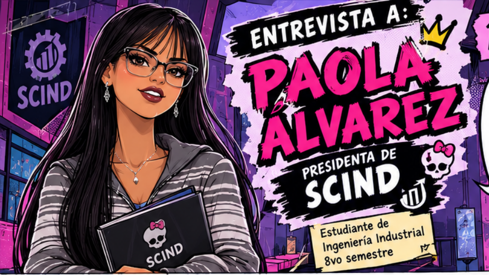
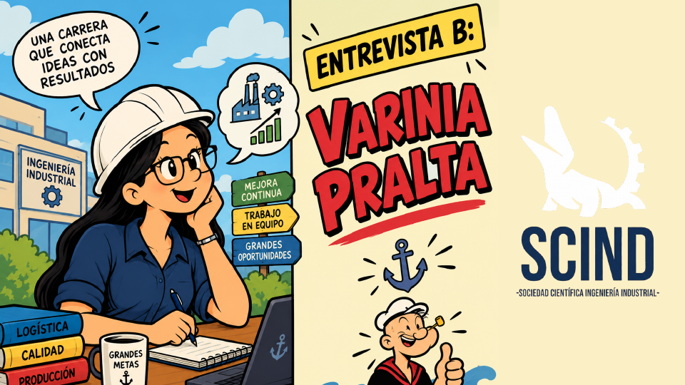

Universidad Catolica Boliviana "San Pablo"
Logro académico destacado
Ingeniería Industrial UCB celebra su reacreditación ARCU-SUR
Un reconocimiento regional que respalda la calidad académica, la formación profesional y el compromiso de la comunidad de Ingeniería Industrial UCB.
ARCU-SUR
Excelencia académica regional para Ingeniería Industrial
Revista Industrial UCB
Comunidad Industrial
de Alto Impacto
Contenido académico y estudiantil con narrativa visual, experiencias y oportunidades de la comunidad industrial.
Sociedad Cientifica
Publicaciones y semilleros
Vida Estudiantil
Proyectos y experiencias
UCB
Revista
Cronicas y Ediciones
Produccion y operaciones
Logistica de cadenas
Gestion de proyectos
Calidad y mejora continua
Vida Estudiantil
Lo quée se vive dentro y fuera del aula
Formacion academica, comunidad universitaria y experiencias reales en ingenieria.
Experiencia destacada
Visitas tecnicas a empresas: aprendizaje directo de procesos productivos
Inspirado en actividades publicadas por la carrera, donde estudiantes fortalecen criterio tecnico observando operaciones reales.
Ver cronicaLaboratorios UCB
Espacios de practica en simulacion, procesos, calidad y toma de decisiones.
Cultura de investigacion
Semilleros y acompanamiento para transformar ideas en articulos y proyectos.
Vinculacion con industria
Dialogo entre docentes, estudiantes y empresas para resolver retos del entorno.
Comunidad estudiantil
Eventos academicos, bienestar y liderazgo quée fortalecen la vida universitaria.
Sociedad Cientifica de Ing. Industrial
Investigacion estudiantil con identidad UCB
La Sociedad Cientifica integra estudiantes de distintos semestres para investigar, publicar y compartir propuestas orientadas al desarrollo industrial de Bolivia.
- Semilleros por lineas de produccion, logistica y gestion
- Talleres de redaccion y metodologia de investigacion
- Exposiciones en ferias, congresos y actividades de la facultad
rlaguna@ucb.edu.bo | Int. 2820
Facultad de Ingenieria - Bloquée G
Unidad Academica Regional La Paz
Central e informaciones
Revista
Articulos, reportajes y cronicas
Explora contenido academico y estudiantil por categoria.
Académico
ASLEIN Bolivia 2026
Encuentro académico para compartir conocimientos, experiencias y retos de la Ingeniería Industrial.
Reacreditación destacada
Reacreditación ARCU-SUR
Conoce el sistema regional de acreditación y su aporte a la calidad de Ingeniería Industrial UCB.
Sociedad científica
Entrevista SCIND
Publicación especial en formato PDF con testimonios, proyectos y visión de la Sociedad Científica.
Cómic - nuevo
Entrevista a Paola Álvarez
Presidenta de SCIND y estudiante de Ingeniería Industrial. Disponible en lectura digital.
Cómic - nuevo
Entrevista a Varinia Pralita
Una mirada estudiantil a la logística, la calidad y las oportunidades de Ingeniería Industrial.
Biblioteca de Cómics SCIND
Entrevistas para leer, explorar e inspirarse
Elige una entrevista. Solo se carga el PDF que estás leyendo para que la página sea más rápida.

Nueva entrevista
Paola Álvarez
Presidenta de SCIND · Ingeniería Industrial · 8vo semestre

Nueva entrevista
Varinia Pralita
Logística, calidad, producción y trabajo en equipo
Archivo SCIND
José Gabriel Vaca Guzmán Mejía
Vocación, eficiencia, herramientas y experiencia UCB
Leyendo ahora
Entrevista a Paola Álvarez
Hitos Reales
Noticias y actividades destacadas de Ingenieria Industrial UCB
Resumen basado en publicaciones oficiales de la sede La Paz.
Visita estudiantil a Delizia, Industrias Lider e Industrias Gustossi
Estudiantes de 1er y 4to semestre realizaron aprendizaje de campo en procesos productivos.
Visita de 7mo semestre a planta Pepsi de CBN
Recorrido por areas de calidad, logistica y HSMA para fortalecer la asignatura de Procesos Industriales.
Ediciones
Revistas publicadas
Descarga cada volumen en PDF desde esta seccion (carga automatica).
Cargando
Cargando ediciones...
En unos segundos veras todas las revistas publicadas.